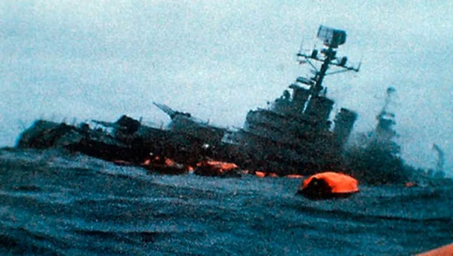

United Kingdom without attack submarines: no defense or deterrence in Malvinas
For the first time in decades, the Royal Navy's entire fleet of Astute-class nuclear hunter-killer submarines is docked due to maintenance failures. Without its main combat asset in the South Atlantic, London can no longer credibly sustain its rhetoric of an "unwavering defense" of the occupied archipelago. From Patagonia, a crack that Argentine diplomacy has every right to point out.

This is not speculation or a social-media rumor. The information was revealed by The Mail on Sunday and echoed by The Telegraph, LBC and the Daily Mail: for the first time, the Royal Navy's fleet of attack submarines —the Astute-class nuclear hunters— is completely immobilized in port.
The entire attack fleet, in dock
The class's five operational submarines —HMS Astute, Ambush, Artful, Audacious and Anson— are moored, undergoing maintenance and repairs. A sixth, HMS Agamemnon, was commissioned in late 2025 but is still in sea trials, and the seventh, HMS Achilles, is still under construction at Barrow-in-Furness. The result is unprecedented: the United Kingdom currently has no attack submarine available to deploy.
According to former senior British commanders, the cause is structural: years of budget cuts, a shortage of dry docks and a crisis of specialized personnel. The ship-lift at the Faslane base has been out of service for more than a year, and the upgrade works at Devonport reduce how many boats can be repaired at once. Lord West, a former head of the Royal Navy, called the situation "unacceptable" and "very worrying." Former submarine commander Ryan Ramsey was blunter to The Telegraph: the United Kingdom, he said, "looks toothless."
Each of these hunters displaces 7,400 tons, measures 97 meters, is driven by a Rolls-Royce nuclear reactor and carries heavy Spearfish torpedoes and Tomahawk cruise missiles. In theory, it is one of the most sophisticated weapons in the British arsenal. Today, not one is in any condition to put to sea.
A strategic vacuum in the South Atlantic

In 1982, HMS Conqueror —a British nuclear submarine— sank the cruiser ARA General Belgrano and forced the entire Argentine fleet to withdraw to port for the rest of the war. That episode turned the submarine threat into the United Kingdom's most feared card for maintaining military control of the archipelago.
Four decades later, the board has flipped. There is not a single British attack submarine in condition to patrol the South Atlantic. The Vanguard-class Trident missile submarines remain operational, but they are left without the escort those hunters used to provide. The same exposure reaches RAF Mount Pleasant and the waters surrounding Malvinas.
The question arises on its own: if London cannot even deploy its main naval combat assets, on what does it sustain its rhetoric of an "unwavering defense" of the territory it occupies?
A crisis foretold
The problem is not an isolated event. Decades of cuts, a declining naval industry and a shortage of qualified crews have dragged the Royal Navy to its worst operational moment in a long time. As early as January 2026 it had emerged that only three of its six Type 45 destroyers were in service.
The Ministry of Defence merely stated that "work is underway on a maintenance recovery plan." The First Sea Lord, Admiral Sir Gwyn Jenkins, launched it on 15 January 2026 with a modest goal: to return at least three Astutes to high readiness before the end of the year. He offered no timelines or guarantees as to when the full fleet will be back afloat.
What it means for Argentina's claim
To be clear: from the Argentine perspective, this opens no military opportunity. No serious analysis holds that the country today has the logistical, naval or air capability for an armed reconquest, nor is that the state policy that national diplomacy pursues.
The real impact is political and symbolic. For decades, the United Kingdom justified its refusal to negotiate with the argument that the islands were protected by a "modern and credible" force. That narrative cracks when all of its combat submarines are out of service at the same time. In the international forums where the Malvinas Question is debated, an uncomfortable contradiction is exposed: London demands respect for the self-determination of the islanders, yet cannot guarantee the effective defense of the territory it administers.
Conclusion
The fact is verifiable and its consequences concrete: the Royal Navy is going through a phase in which its submarine arm —its most feared instrument of power projection— is simply unavailable.
For Argentina's sovereignty claim, this is not an invitation to military adventure, but a confirmation that British power has limits and cracks. National diplomacy now has an objective fact with which to question the supposed "guarantee of defense" that London brandishes each time it refuses to sit down and negotiate.
From Patagonia, watching closely a crisis that lays bare the weaknesses of a power that once ruled every sea.
Report prepared with information from The Mail on Sunday, The Telegraph, LBC and statements by former Royal Navy officials. June 2026.